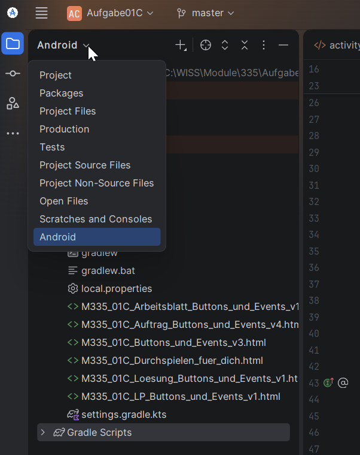
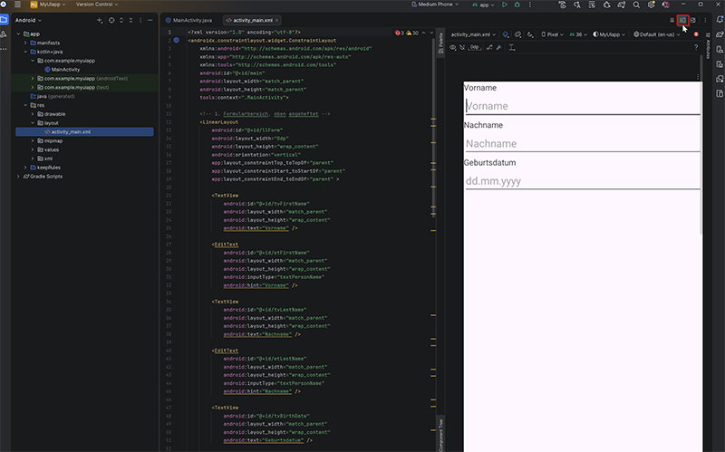

Modul 335 Mobile Applikationen, Tag 1 Vormittag. Zeitbudget 30 Minuten, dazu 10 Minuten Einführung durch die Lehrperson.
M335 HelloWorld zeigt Hello World.Du gibst nichts ab. Deine Notizen gehören dir. Du führst sie in deinem eigenen Heft oder in einer Datei. Vergleich sie danach mit dem Lösungsmaterial.
Fertig bist du, wenn das stimmt:
Mach zwei Screenshots für dich selbst. Einen vom Emulator mit deinem Namen, einen vom Logcat mit der Zeile Caused by.
Dazu der 01B Wissenscheck. Er ist unbenotet und beliebig wiederholbar.
Warum du absichtlich etwas kaputt machst. Teil C ist der wichtigste Teil dieses Auftrags. Du wirst in den nächsten fünf Tagen viele Abstürze sehen. Wer den Stacktrace lesen kann, findet die Ursache in dreissig Sekunden. Wer es nicht kann, sitzt zwanzig Minuten fest und ruft nach Hilfe. Die drei Schritte, die du heute lernst, gelten für jeden Absturz im ganzen Modul.
findViewById.Aus dem Vorbereitungsauftrag hast du ein Projekt, das Hello World anzeigt. Du hast es aber nur erzeugt, nicht verstanden.
Jetzt schaust du hinein. Danach änderst du zum ersten Mal etwas am Code. Und dann lässt du es absichtlich krachen.
Du ergänzt nur. Du löschst nichts. Der Code, den Android Studio erzeugt hat, enthält mehr, als es auf den ersten Blick scheint. Lass alles stehen, auch die Zeilen, die du heute noch nicht verstehst.
Das sind alle Bausteine, die du für diesen Auftrag brauchst. Mehr nicht.
Welche Angaben Pflicht sind:
| Angabe | Pflicht bei | Bemerkung |
|---|---|---|
| android:id | jedem Element, das du im Code ansprechen willst | Ohne id findet findViewById nichts |
| @+id/ | beim ersten Vergeben einer id | Das Plus legt die id neu an |
| @id/ | beim Verweisen auf eine bestehende id | Ohne Plus. Kommt in Block 02 dran |
| Reihenfolge im Code | immer | setContentView zuerst, danach erst findViewById |
Im Modul 335 gilt eine feste Regel. Der Klassenname des Controls bestimmt das Präfix.
TextView wird tv, EditText wird et.Button wird btn.tvGreeting.Bezeichner sind englisch, sichtbare Texte deutsch.
Warum das Präfix mehr ist als Kosmetik. Wer tv schreibt, muss wissen, dass es eine TextView ist und kein Fernseher. Das Präfix übt die API-Namen mit, ohne dass du sie auswendig lernen musst.
| Baustein | Wofür | So sieht er aus |
|---|---|---|
| setContentView | Lädt das Layout und erzeugt daraus die Views. Steht schon im Code | setContentView(R.layout.activity_main); |
| R | Automatisch erzeugte Klasse. Enthält für jede id eine Zahl. Nie von Hand ändern | R.id.tvGreeting |
Denk kurz darüber nach, bevor du anfängst. Aufschreiben musst du nichts davon. Die drei Fragen kommen im Wissenscheck wieder, dort bekommst du sofort eine Rückmeldung.
setContentView(R.layout.activity_main) genau? Was gibt es vorher noch nicht, das es nachher gibt?R.id.tvGreeting? Wer erzeugt die R-Klasse und wann?MainActivity steht schon ein Block mit einem Pfeil, also mit ->. Schau ihn dir an. Wann wird dieser Code wohl ausgeführt?A1Ansicht umstellen.
Öffne dein Projekt. Stell die Ansicht links oben von Project auf Android. Das ist keine echte Ordnerstruktur, sondern eine Sicht, die das Wichtige nach oben holt.

A2Fünf Dateien suchen und kurz anschauen.
| Datei | Wofür sie da ist |
|---|---|
| app / manifests / AndroidManifest.xml | Der Steckbrief der App |
| app / java / ... / MainActivity.java | Dein Code |
| app / res / layout / activity_main.xml | Dein Bildschirm |
| app / res / values / strings.xml | Alle Texte der App |
| Gradle Scripts / build.gradle.kts (Module :app) | Die Bauanleitung |
Trag auf deinem Notizblatt zu jeder Datei ein, was dir beim Hineinschauen aufgefallen ist. Ein Stichwort genügt.
So prüfst du Teil A.
| Baustein | Wofür | So sieht er aus |
|---|---|---|
| android:id | Gibt einem Element im Layout einen Namen, damit du es im Code findest | android:id="@+id/tvGreeting" |
B1Der TextView eine id geben.
Öffne app / res / layout / activity_main.xml und wechsle oben rechts auf die Ansicht Code. Suche das Element TextView. Ergänze als erste Zeile innerhalb der TextView:
android:id="@+id/tvGreeting"

Das @+id/ bedeutet: leg diese id neu an. Ohne Plus würde Android Studio eine bestehende id suchen und nichts finden.
| Baustein | Wofür | So sieht er aus |
|---|---|---|
| findViewById | Holt dir ein Element aus dem geladenen Layout in den Code | TextView tv = findViewById(R.id.tvGreeting); |
| setText | Schreibt Text in eine TextView | tvGreeting.setText("Hallo Anna!"); |
| Alt und Enter | Holt einen fehlenden Import. Cursor muss im roten Wort stehen | Taste Alt und Enter |
B2Den Text aus dem Code setzen.
Öffne MainActivity.java. Suche die Zeile mit setContentView. Füge direkt darunter diese zwei Zeilen ein:
TextView tvGreeting = findViewById(R.id.tvGreeting); tvGreeting.setText("Hallo DEIN NAME!");
TextView ist jetzt rot unterkringelt. Das ist richtig so. Der Import fehlt. Klick mitten in das Wort TextView und drück Alt und Enter. Wähle Import class. Oben in der Datei erscheint eine neue Zeile mit import android.widget.TextView;
B3Starten.
Drück Run. Auf dem Emulator steht nun dein Name. Mach davon einen Screenshot. Der Emulator-Rahmen muss darauf sichtbar sein.
So prüfst du Teil B.
MainActivity.java steht eine neue Zeile import android.widget.TextView;Jetzt lernst du das Wichtigste an diesem Block: wie du Fehler selbst findest.
C1Die zwei Zeilen verschieben.
Schieb deine beiden neuen Zeilen so, dass sie oberhalb von setContentView stehen. Sonst änderst du nichts.
C2Starten und abstürzen lassen.
Drück Run. Die App stürzt ab. Das ist gewollt.
| Baustein | Wofür | So sieht er aus |
|---|---|---|
| Logcat | Der Reiter unten in Android Studio. Zeigt alle Meldungen des Geräts | Reiter Logcat |
C3Den Stacktrace lesen.
Öffne unten den Reiter Logcat. Du siehst einen langen roten Block. Der wirkt erschlagend, ist aber immer gleich aufgebaut.
| Schritt | Was du tust |
|---|---|
| 1 | Ignoriere alle Zeilen, die mit android. oder com.android. beginnen. Das ist Android selbst und nicht dein Fehler. Das ist meistens die Hälfte des Blocks |
| 2 | Suche das Wort Caused by. Der Satz direkt dahinter ist die echte Ursache. Die allererste Zeile ganz oben sagt nur, dass etwas abgestürzt ist, nicht warum |
| 3 | Suche unterhalb von Caused by die erste Zeile mit deinem eigenen Paketnamen. Dort stehen Datei und Zeilennummer. Das ist die Stelle in deinem Code |
Schreib die drei Ergebnisse auf dein Notizblatt. Mach einen Screenshot vom Logcat.
Diese drei Schritte gelten für jeden Absturz im ganzen Modul. Du brauchst sie am Tag 2, am Tag 3, am Tag 4 und in der Leistungsbeurteilung. Merk sie dir jetzt, dann musst du sie nie wieder nachschlagen.
C4Reparieren.
Stell die Reihenfolge wieder her. Die App muss wieder laufen.
So prüfst du Teil C.
Caused by-Zeile, abgeschrieben aus deinem eigenen Logcat.Zum Vergleichen. Die fertigen Dateien, die Antworten zu den Denkfragen und die Lösungen der zwei Übungen findest du im Classroom-Material 01B Lösung - Android Studio und erster Code. Schau erst hinein, wenn du selbst fertig bist.
Diese zwei Übungen gehören zur Hausaufgabe 1. Im Block reicht die Zeit dafür nicht. Du löst sie mit dem, was du eben gelernt hast. Kein neuer Stoff.
Übung 1, eine zweite Zeile
Ergänze im Layout eine zweite TextView unter der ersten. Setz ihren Text aus dem Code, nicht im XML. Sie soll deine Klasse anzeigen.
So prüfst du: Auf dem Emulator stehen zwei Zeilen untereinander. Beide Texte kommen aus MainActivity.java, im XML steht kein android:text.
Übung 2, erklären
Erkläre einem Lerngspänli in eigenen Worten, warum findViewById nach setContentView stehen muss und nicht davor. Nimm deinen eigenen Absturz aus Teil C als Beispiel.
So prüfst du: Dein Gegenüber kann danach selbst sagen, was findViewById zurückgibt, wenn es zu früh aufgerufen wird.
Zuerst die Pflichtaufgabe fertig und lauffähig. Dann erst hier weiter.
Auftrag: Öffne strings.xml. Leg dort einen eigenen Eintrag an und lass deine TextView diesen Text anzeigen, ohne dass der Text irgendwo sonst im Projekt steht.
Und die Frage, die dazugehört: Android Studio zeigt eine gelbe Warnung, wenn Text direkt im Layout steht. Warum ist der Umweg über strings.xml gewollt? Nenne einen Fall, in dem er dir echte Arbeit spart, und einen, in dem er nur lästig ist.
Keine Musterlösung. Auch nicht im Lösungsmaterial.
| Das siehst du | Ursache | Das machst du |
|---|---|---|
TextView ist rot unterkringelt | Der Import fehlt | Cursor mitten ins rote Wort, dann Alt und Enter, dann Import class |
| Alt und Enter bietet keinen Import an | Der Cursor steht nicht im roten Wort | Klick mitten in das Wort, nicht davor und nicht dahinter |
R.id.tvGreeting bleibt rot, obwohl die id im XML steht | Die R-Klasse wurde noch nicht neu erzeugt | Menü Build, dann Rebuild Project. Danach warten, bis die Statusleiste unten leer ist |
Die App stürzt beim Start ab, im Logcat steht NullPointerException | Das ist Teil C und gewollt. Oder die id im Code stimmt nicht mit dem XML überein | Drei Schritte aus C3 anwenden. Dann id im XML mit der im Code vergleichen, Buchstabe für Buchstabe |
Im Projekt gibt es keine Datei activity_main.xml | Falsches Template. Empty Activity statt Empty Views Activity | Projekt neu anlegen mit Empty Views Activity |
MainActivity hat die Endung .kt | Die Sprache steht auf Kotlin | Projekt neu anlegen mit Language Java |
| Viele rote Fehler direkt nach dem Öffnen | Gradle ist noch nicht fertig | Warten, bis die Statusleiste unten leer ist. Der erste Sync dauert gemessen zwei Minuten vierundzwanzig |
| Im Logcat siehst du nichts | Oben ist das falsche Gerät oder der falsche Prozess gewählt | Oben im Logcat dein Gerät und deine App auswählen. Notfalls den Filter leeren |
| Der Text auf dem Emulator ändert sich nicht | Die App wurde nicht neu installiert | Nochmals auf Run drücken und warten, bis unten Launch succeeded steht |
| Die oberste Zeile liegt unter der Uhr | Der Block mit dem Pfeil wurde gelöscht | Wieder einsetzen. Er ist kein Beiwerk, er hält deinen Inhalt unter der Statusleiste |
Das hier ersetzt das frühere Arbeitsblatt. Du füllst es nicht in Google Classroom aus, sondern in deinem eigenen Heft, in einer Textdatei oder auf einem Ausdruck dieser Seite. Es gehört dir, und es wird nicht eingesammelt.
Warum du es trotzdem führst. Was du selbst aufschreibst, bleibt. Und am Prüfungstag hast du keine Anleitung, sondern nur das, was du geübt hast.
Schau jede Datei kurz an. Trag in die letzte Spalte ein Stichwort ein, das dir aufgefallen ist. Zum Beispiel etwas, das du wiedererkannt hast, oder etwas, das dich überrascht hat.
| Datei | Wofür sie da ist | Was mir aufgefallen ist |
|---|---|---|
| app / manifests / AndroidManifest.xml | Der Steckbrief der App | |
| app / java / ... / MainActivity.java | Dein Code | |
| app / res / layout / activity_main.xml | Dein Bildschirm | |
| app / res / values / strings.xml | Alle Texte der App | |
| Gradle Scripts / build.gradle.kts (Module :app) | Die Bauanleitung |
Zwei Fragen dazu. Antworte mit dem Dateinamen.
| Frage | Deine Antwort |
|---|---|
| In welcher Datei steht der sichtbare Text Hello World? | |
| In welcher Datei steht, ab welcher Android-Version deine App läuft? |
Nach dem Absturz in Teil C. Schreib ab, was in deinem Logcat steht. Nicht das aus dem Beispiel und nicht das vom Sitznachbarn. Die Zeilennummer ist bei jedem anders.
| Was du suchst | Was bei dir steht |
|---|---|
| Die ganze Zeile nach Caused by | |
| Die erste Zeile darunter mit deinem eigenen Paketnamen | |
| Deine Datei und deine Zeilennummer | |
| In einem Satz: warum ist die App abgestürzt? | |
| Ungefähr wie viele Zeilen des roten Blocks konntest du nach Schritt 1 überspringen? |
Trag hier ein, was jeder Screenshot zeigt. Die Bilddateien behältst du bei dir.
| Nr. | Was das Bild zeigen muss | Dateiname deines Screenshots |
|---|---|---|
| 1 | Der Emulator mit deinem eigenen Namen. Der Emulator-Rahmen muss sichtbar sein | |
| 2 | Der Logcat mit dem Absturz aus Teil C. Die Zeile mit Caused by muss zu sehen sein |
Das Wichtigste aus diesem Auftrag, zum Nachschlagen.
| HANOK | Ziel |
|---|---|
| 3.1 | Kennt die Bedienung und den Einsatz einer passenden Entwicklungs-, Simulations- und Testumgebung |
| 3.2 | Kennt ein gängiges Framework und dessen APIs |
Nach diesem Auftrag kannst du:
findViewById nach setContentView stehen muss.| Zeitbudget | 30 Minuten. Denkfragen 2, Teil A 6, Teil B 10, Teil C 12. Dazu 10 Minuten Einführung durch die Lehrperson davor |
|---|---|
| Sozialform | Einzel- oder Partnerarbeit |
| Aufgabenart | Geführter Aufbau mit einer Entdeckungsstelle (C1 gegen C4) |
| Voraussetzung | Vorbereitungsauftrag erledigt, Projekt läuft |
| KI | In Teil A bis C nicht erlaubt. Bei den Übungen und der Zusatzaufgabe erlaubt |
| Abgabe | keine. Der Wissenscheck des Halbtags genügt |
Achtung beim Blockschnitt. Teil A und B liegen im Block 1 vor der Pause, Teil C im Block 2 danach. Der Schnitt liegt gut: Teil B endet damit, dass der eigene Name auf dem Emulator steht. Lass niemanden vor der Pause mit einer abstürzenden App sitzen.
| Name | Typ | Einstellung |
|---|---|---|
| 01B Auftrag - Android Studio und erster Code | Material | Schüler können Datei ansehen. Das ist dieses Dokument. Das Notizblatt steht darin |
| 01B Wissenscheck - Android Studio und erster Code | Aufgabe mit Quiz | Unbenotet, beliebig oft wiederholbar. Sieben Fragen |
| 01B Lösung - Android Studio und erster Code | Material | Schüler können Datei ansehen |
| Art | Was |
|---|---|
| Hardware | Eigenes Notebook, laufender Emulator Medium Phone API 36.1 |
| Software und Tools | Android Studio Quail 2 Patch 1, Google Classroom |
| Dokumente | Dieses Dokument, mit dem Notizblatt am Schluss von Abschnitt 02 |
| Buch | Android-Apps entwickeln für Einsteiger (Rheinwerk), Kapitel 3.6 |
Nur Kapitel 3.6, nicht 3.1 bis 3.5. Die Abschnitte 3.1 bis 3.4 sind veraltet. In 3.4 sagt das Buch, man solle Empty Activity wählen. Das ist heute die Compose-Vorlage und hat kein XML-Layout. Wer dem Buch dort folgt, kann diesen Auftrag nicht durchführen. Für uns gilt Empty Views Activity.
Modul 335 | Tag 1 Vormittag | Auftrag 01B | Version 2 | 11.08.2026